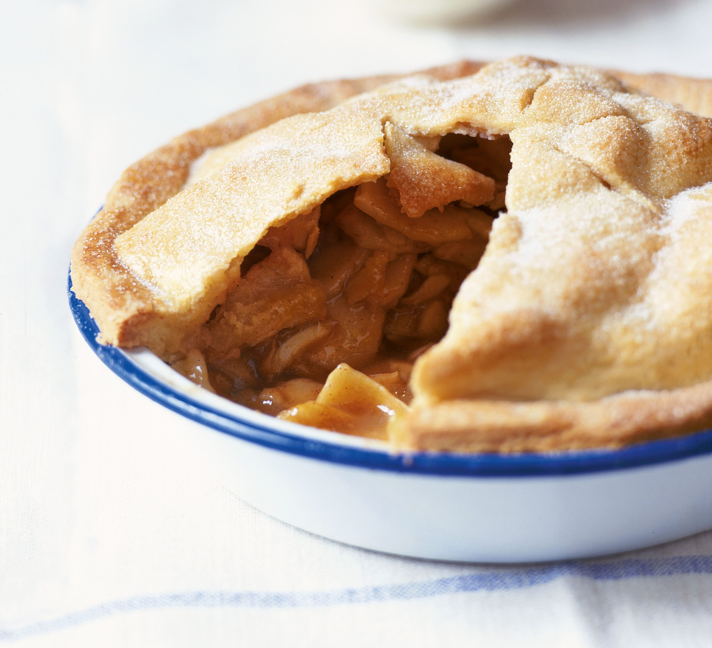

Homemade Apple Pie

Ingredients
For the filling
- 1kg Bramley apples
- 140g golden caster sugar
- ½ tsp cinnamon
- 3 tbsp flour
For the pastry
- 225g butter, room temperature
- 50g golden caster sugar, plus extra
- 2 eggs
- 350g plain flour, preferably organic
- softly whipped cream, to serve
Steps
- Put a layer of paper towels on a large baking sheet. Quarter, core, peel and slice the apples about 5mm thick and lay evenly on the baking sheet. Put paper towels on top and set aside while you make and chill the pastry.
- For the pastry, beat the butter and sugar in a large bowl until just mixed. Break in a whole egg and a yolk (keep the white for glazing later). Beat together for just under 1 min – it will look a bit like scrambled egg. Now work in the flour with a wooden spoon, a third at a time, until it’s beginning to clump up, then finish gathering it together with your hands. Gently work the dough into a ball, wrap in cling film, and chill for 45 mins. Now mix the 140g/5oz sugar, the cinnamon and flour for the filling in a bowl that is large enough to take the apples later.
- After the pastry has chilled, heat the oven to 190C/fan 170C/gas 5. Lightly beat the egg white with a fork. Cut off a third of the pastry and keep it wrapped while you roll out the rest, and use this to line a pie tin – 20-22cm round and 4cm deep – leaving a slight overhang. Roll the remaining third to a circle about 28cm in diameter. Pat the apples dry with kitchen paper, and tip them into the bowl with the cinnamon-sugar mix. Give a quick mix with your hands and immediately pile high into the pastry-lined tin.
- Brush a little water around the pastry rim and lay the pastry lid over the apples pressing the edges together to seal. Trim the edge with a sharp knife and make 5 little slashes on top of the lid for the steam to escape. (Can be frozen at this stage.) Brush it all with the egg white and sprinkle with caster sugar. Bake for 40-45 mins, until golden, then remove and let it sit for 5-10 mins. Sprinkle with more sugar and serve while still warm from the oven with softly whipped cream.